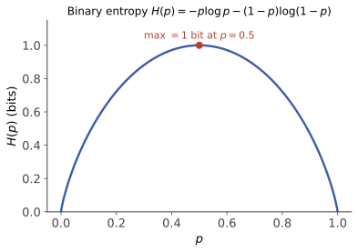

信息论 I · 熵与信源编码
信息论把"信息"变成可计算的量。全站已多次借用它的概念（决策树的熵、LLM 的交叉熵），本课给它们正式户口。第一页回答两个问题：不确定性怎么度量（熵——而且是公理逼出来的唯一答案）、数据最多能压到多小（信源编码定理：答案还是熵）。
1. 自信息与熵

学习层：先预测四符号码的平均长度
具体谜题：非二进概率怎样落到整数码长？
固定一个无记忆信源
先不看实验台，预测三件事：
- 定长码、一符号 Huffman 码、二符号分组 Huffman 码，哪一个每个源符号的平均码长最低？
- 下面这棵确定性 Huffman 树的 Kraft 和会不会超过 1？
- 熵 \(H\) 是不是每一条消息都能兑现的整数 bit 数？
这个分布是刻意选的：四个概率都不是 \(2^{-k}\) 的整齐边界。Huffman 的一个确定性并列处理约定是“权重相同时按原符号顺序作左子树优先”，于是
无 JavaScript 时的静态读法：对上述 \(P\)，一符号 Huffman 码的账本为
| 符号 | \(P\) | 码字 | 长度 | 理想长度 \(-\log_2P\) |
|---|---|---|---|---|
| \(A\) | 0.4 | 0 | 1 | 1.321928 |
| \(B\) | 0.3 | 10 | 2 | 1.736966 |
| \(C\) | 0.2 | 110 | 3 | 2.321928 |
| \(D\) | 0.1 | 111 | 3 | 3.321928 |
因此
定长码需要 \(\lceil\log_2 4\rceil=2\) bits/符号。若把独立源符号两两分组，对 16 个块的乘积分布再作 Huffman，默认确定性树给出约 \(L_2/2=1.865000\) bits/源符号；分组长度 \(g=3\) 时约为 \(1.859000\)。分组的改善来自块级整数码长更细地逼近 \(gH\)，不是把单个符号的码长变成分数。
这里确实有
但它是平均值的定理。\(A\) 的这一条消息用 1 bit，\(D\) 的这一条消息用 3 bits；某一条消息的长度可以高于或低于 \(H\)。更不能把“渐近平均极限”读成“每条消息都能无损压到 \(H\) bits”：\(H\) 通常不是整数，信源编码定理说的是长序列、平均每符号码长可以逼近 \(H\)，并不承诺单次消息或任意有限 block 恰好达到它。
反例与迁移
如果把 \(P\) 换成带强上下文的字符流，独立乘积分布 \(P(a)P(b)\) 就不再是块的真实分布；此时更好的分组码可能只是错误模型的幻觉。迁移练习：保留同一四符号边缘分布，改变相邻符号的相关性，重新问“块 Huffman 的平均长度”和“熵率”分别由什么决定。
自信息：事件发生所携带的"惊讶度" \(I(x) = -\log p(x)\)（以 2 为底单位比特）。为什么必须是对数？三条公理锁死：惊讶度只依赖概率且随 \(p\) 递减、对 \(p\) 连续、独立事件的惊讶度相加（\(I(pq) = I(p) + I(q)\)）——柯西函数方程仅有对数解（与决策树页熵公理化同一论证的事件版）。小概率事件信息量大："狗咬人"不是新闻。
熵：平均惊讶度
基本性质：
- \(0 \leq H(X) \leq \log|\mathcal{X}|\)：下界当且仅当退化分布（毫无悬念），上界当且仅当均匀分布（Jensen 一行证——最大悬念是等可能）；
- 二元熵 \(h(p) = -p\log p - (1-p)\log(1-p)\)：在 \(p = \frac12\) 处峰值 1 比特——公平硬币是最难猜的硬币；
- 直觉标定：\(H\) = 用最优策略做"是/否"二十问游戏，平均需要问的次数（例 1 兑现）。
联合熵与条件熵：\(H(X, Y) = E[-\log p(X,Y)]\)；\(H(Y \mid X) = E[-\log p(Y \mid X)]\)（知道 \(X\) 后对 \(Y\) 剩余的不确定性）。
链式法则：\(H(X, Y) = H(X) + H(Y \mid X)\)（对数把乘法概率变加法——概率 I 乘法公式取对数即得）。
信息不增原理：\(H(Y \mid X) \leq H(Y)\)，取等当且仅当独立——多看一眼不会更糊涂（平均意义；个别观测可以增加困惑）。差值就是下一页的互信息。
2. 信源编码：熵是渐近平均极限
问题：给字符分配 0/1 码字，要求前缀码（无码字是另一码字的前缀——即时可解），最小化平均码长 \(L = \sum p_i \ell_i\)。
Kraft 不等式：长度 \(\{\ell_i\}\) 的前缀码存在 \(\iff \sum_i 2^{-\ell_i} \leq 1\)。 （证明直觉：把码字看作满二叉树的叶子，长度 \(\ell\) 的码字占据整棵树 \(2^{-\ell}\) 的"份额"，总份额不超过 1。）
定理（Shannon 信源编码定理） 任何前缀码 \(L \geq H(X)\)；且存在编码使 \(L < H(X) + 1\)。
下界证明骨架（两行，值得记）：\(L - H = \sum p_i \ell_i + \sum p_i \log p_i = -\sum p_i \log\frac{2^{-\ell_i}}{p_i} \geq -\log\sum 2^{-\ell_i} \geq 0\)——中间是 Jensen（\(\log\) 凹），末尾是 Kraft。\(\blacksquare\)
读法：最优码长 \(\ell_i^* \approx -\log p_i\)（高频短码、低频长码——摩尔斯电码的 e 是一个点，直觉先于理论一百年）；熵是压缩的渐近平均下界——它不是每条消息的长度，也不是“每条消息都能无损压到 \(H\) bits”的承诺。Huffman 算法（贪心：反复合并两个最小概率）构造最优前缀码；对块做 Huffman 则把整数码长的舍入摊到更长的 block 上。
3. 🔗 全站对账
- 决策树信息增益（ai 课 03）：选特征 = 最大化 \(H(Y) - H(Y\mid A)\)——本页条件熵的直接应用，那页的公理化证明与本页 §1 是同一个定理；
- LLM 的困惑度（ai 课 07）：\(\mathrm{PPL} = 2^{H}\)（交叉熵的指数）——语言模型的"平均分支数"就是平均码长的指数形式；BPE tokenizer 的"高频合并"正是 Huffman 直觉的词表版；
- 压缩 = 预测（ai 课 07 的口号在此获得定理身份）：预测下一符号的分布越准，\(-\log q\) 平均越短——好的语言模型天然是好的压缩器（下一页交叉熵一节给出精确形式，第三页算术编码把它变成可运行的字面事实）。
4. 典型例题
例 1（二十问游戏） 8 个等可能候选：\(H = 3\) 比特 ⇒ 最优二分提问恰需 3 问。若分布为 \((\frac12, \frac14, \frac18, \frac18)\)：\(H = 1.75\)——先问"是不是第一个"的不均匀问法平均 1.75 问，比盲目二分（2 问）省：好的提问顺序 = 好的编码。
例 2（熵的计算与比较） \(X \sim B(1, 0.9)\)：\(h(0.9) = -0.9\log 0.9 - 0.1\log 0.1 \approx 0.469\) 比特——偏硬币悬念不到半比特；这表示长序列的平均极限约为每次 0.469 bit，不表示任意一条有限投掷记录都恰好需要这个长度。
例 3（Huffman 构造） 概率 \((0.4, 0.2, 0.2, 0.1, 0.1)\)：反复合并最小二者 → 码长 \((1, 3, 3, 3, 3)\) 或 \((2,2,2,3,3)\)（等优），\(L = 2.2\)；对照 \(H \approx 2.12\)——卡在 \([H, H+1)\) 内 ✓。\(\blacksquare\)
下一页：两个分布之间的"距离"——KL 散度与互信息：MLE 的信息论真身、以及为什么整个机器学习都在最小化一个 KL。